현재 사용자의 브라우저는 입니다. 최신 브라우저로 업데이트해주세요.
Internet Explorer 11 설치하기(권장)
1. Internet Expolorer 다운로드 페이지로 이동합니다.
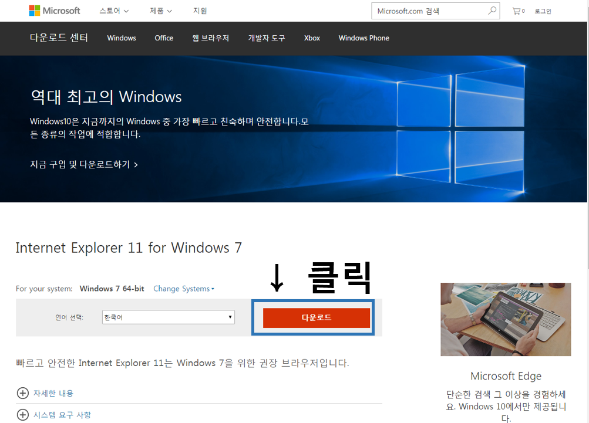
2. 상단의 도움말을 클릭하여 '파일 다운로드'를 클릭합니다.
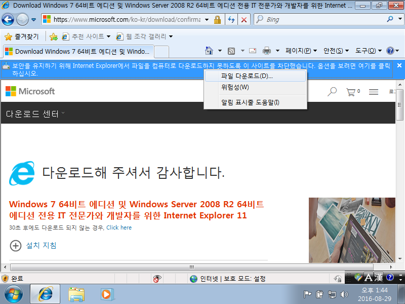
3. 실행 버튼을 클릭합니다.
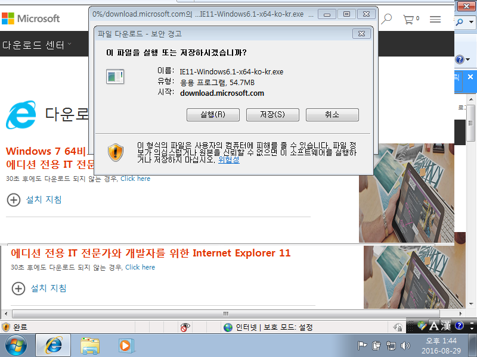
4. 설치를 클릭하여 IE11 버전을 설치합니다.
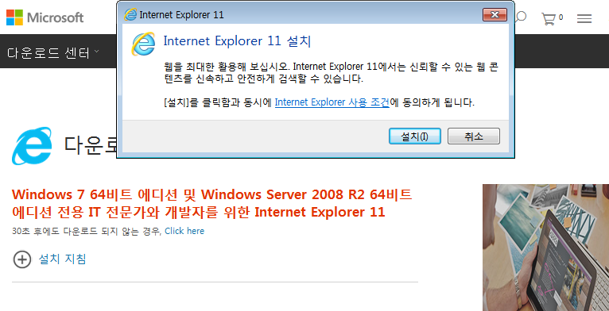
5. 설치가 완료되면 컴퓨터를 다시 시작합니다.
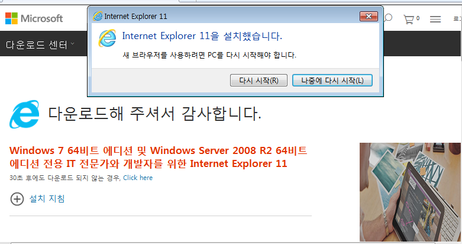
6. 컴퓨터가 다시 켜지면 인터넷 브라우저를 실행합니다. 오른쪽 상단위의 설정 버튼을 클릭 후 Internet Explorer 정보를 클릭합니다.
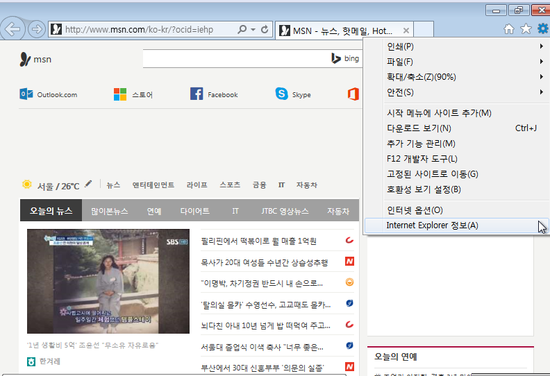
7. Internet Exploer11이 제대로 표시되는지 확인합니다.
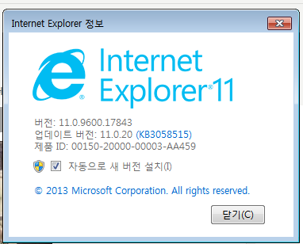
Chrome 최신 버전 설치하기
1. Chrome 다운로드 페이지로 이동하고 Chrome 다운로드 버튼을 클릭합니다.
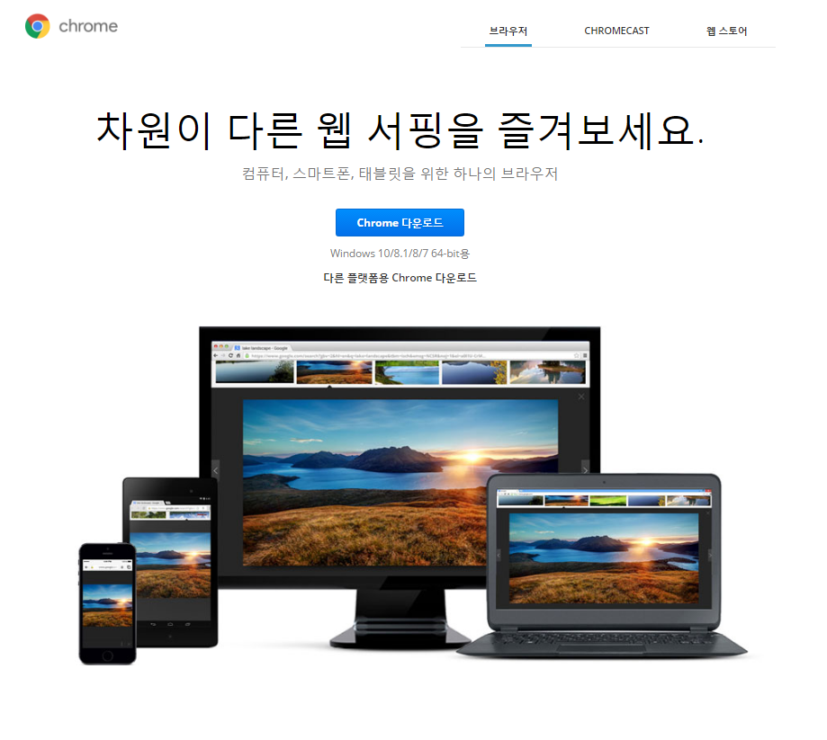
2. 동의 및 설치를 클릭합니다.
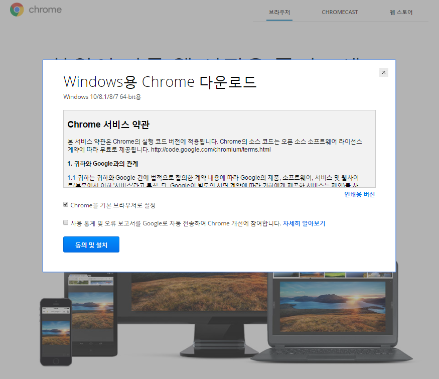
3. 실행을 클릭합니다.
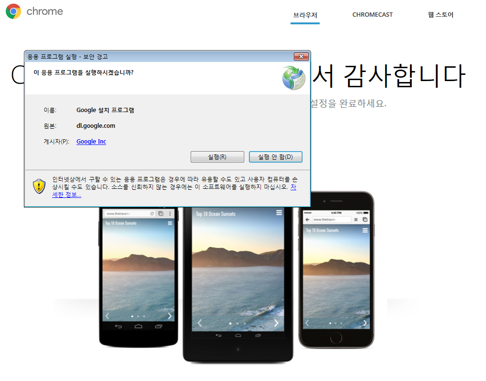
4. '예'를 클릭합니다. 예를 누르면 설치가 진행되는 것을 확인할 수 있습니다.
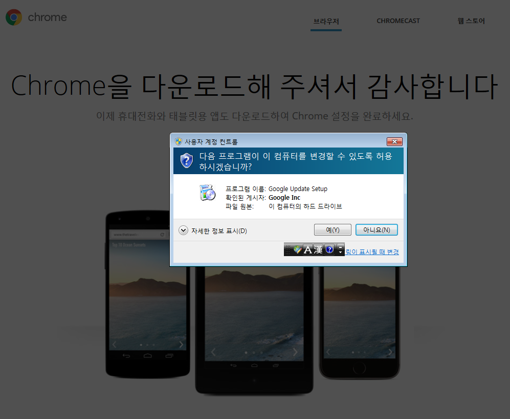
5. 설치가 완료되면 크롬이 제대로 설치되었는지 확인합니다.
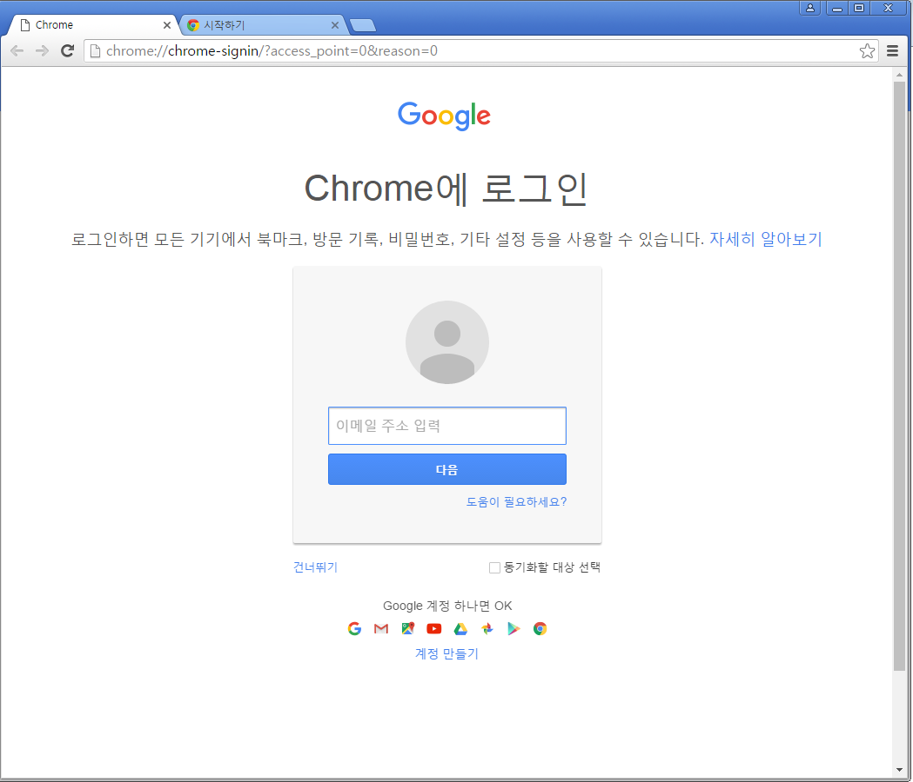